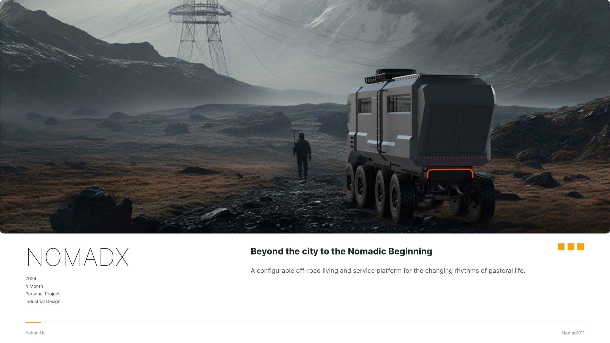
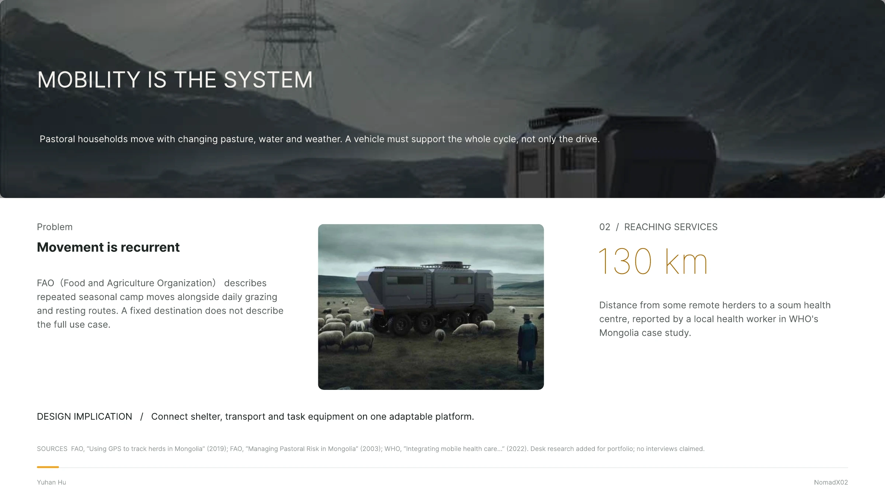
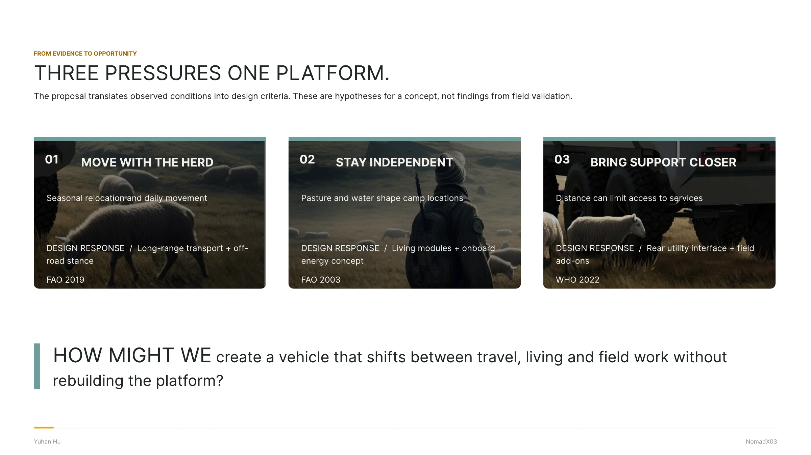
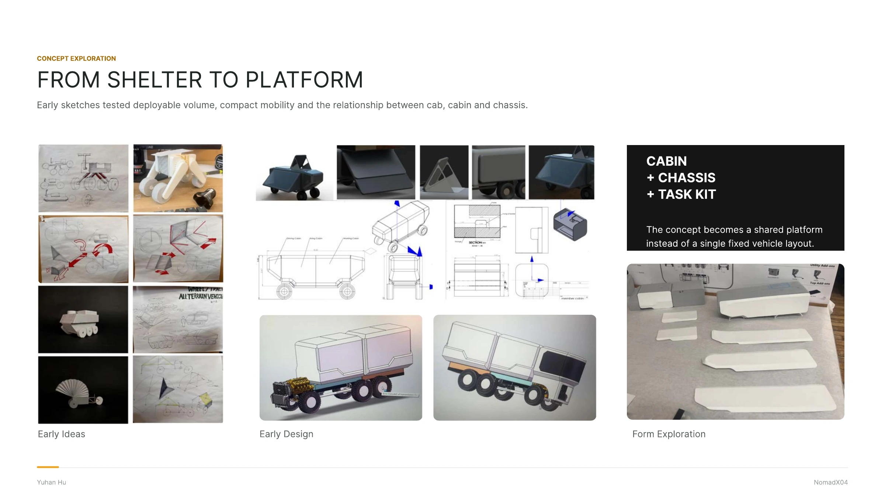
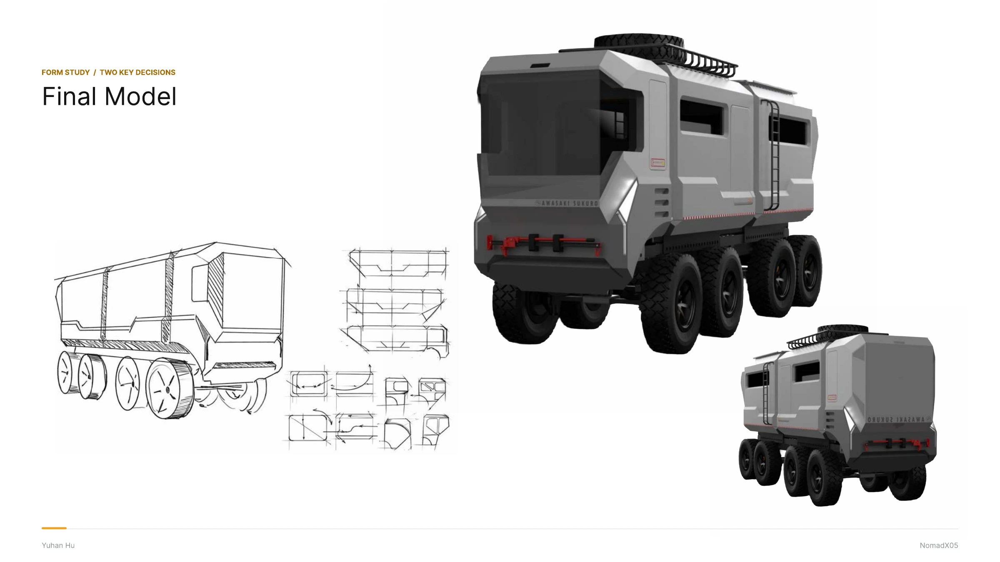
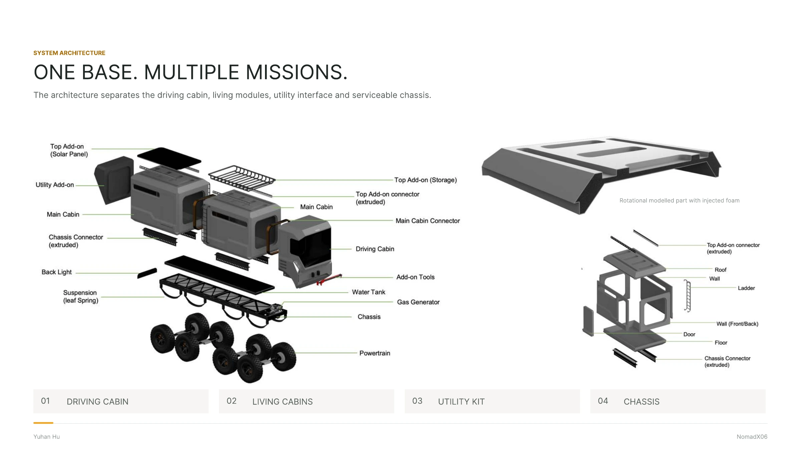
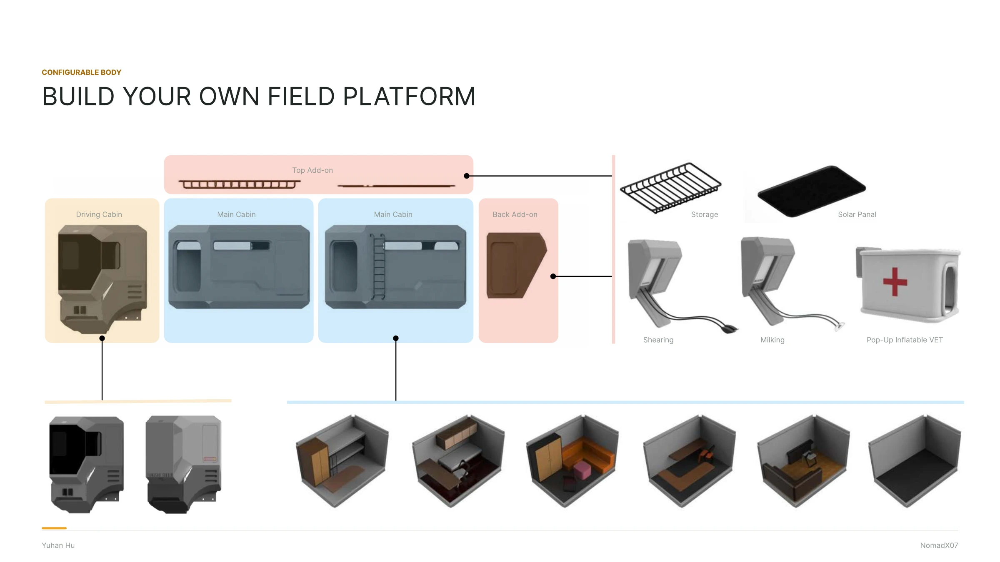
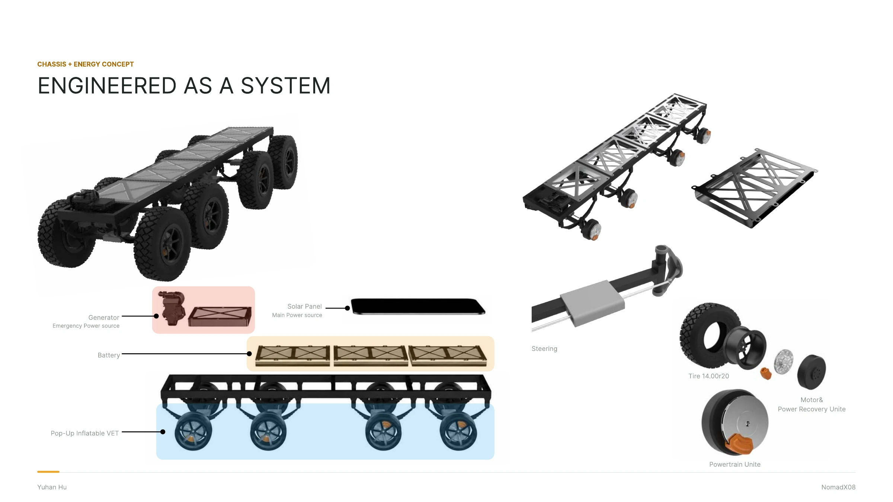

All work
Selected work / 05 · 2024
NomadX
NomadX considers how a shared off-road platform could adapt to the changing routines of pastoral life. Its modular body is designed around different field uses.
View full process






